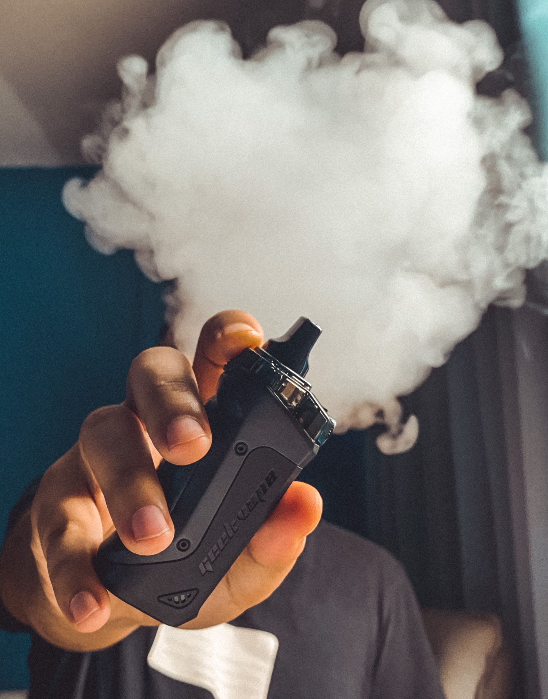

What is Vaping?
Vaping is the act of inhaling and exhaling aerosol from an e-cigarette, or more commonly known as a vape. Its become a recent and ongoing problem among the youth group of Aotearoa since the 2010s, with higher statistics showing especially around the high school age group.
What is that smoke that comes out of vapes?
The "smoke" you see come from a vape device is actually called aerosol, and it is actually suspended liquid droplets and particle the in air. So it looks like smoke like from a cigarette, but it isn't.
So what actually is in a vape?
Vapes contain a liquid called e-liquid, which commonly contains nicotine, one of the substances in vapes responsible for causing long-term addiction. When the liquid is heated, it makes the aerosol you inhale. The aerosol itself isn't safe because it can contain tiny particles and potentially harmful chemicals and metals like lead. Its important to note that not all vapes contain nicotine, and that they are used as therapy devices for people trying to quit cigarettes.
What caused vaping to surge among our youth in NZ?
Youth vaping in New Zealand may have increased due to easy access to vapes, appealing product designs, and social influences. Some retailers sold vapes to underage customers without properly checking their age, while others obtained them through older friends or family members. Cheap disposable vapes with colourful designs may have also contributed to their appeal among young people.
What are the effects of vaping?
Effects on the Brain
Nicotine can alter your brain chemistry,
affecting areas involved in learning, memory,
and impulse control.
It can also rewire your vulnerable
brain to become dependent on the vape.
Effects on the Lungs
Inhaling the aerosol from vapes
can cause irritation in your lungs,
which could lead to inflammation in some cases.
It can also affect your immune system to not work
well when fighting against bacteria and sickness.
Effects on the Heart
Vaping causes your heart to work harder by making it pump faster,
causing your blood pressure
and adrenaline to spike through your blood vessels,
increasing risk of a serious heart disease over time.
Effects on your mood
When you inhale nicotine, your brain is filled with dopamine,
a "feel good" chemical that quite literally
makes you feel good for a few minutes.
But shortly after you experience a "crash" which leaves you feeling empty and restless.
This creates a loop where you want more of the feeling,
leading to addiction.

VAPING TRIVIA
DID YOU KNOW...
- A vape device contains a battery that heats up liquid into aerosol
- The nicotine found in vape is the primary contributor to addiction to vaping
- There are many chemicals used in vapes that can be detected from the aerosol itself
- Some vaping devices are made to look like everyday items such as pens or a small highlighter
- Vape devices are not new, the first one was patented way back in the 1920s